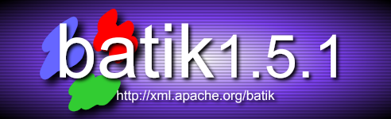
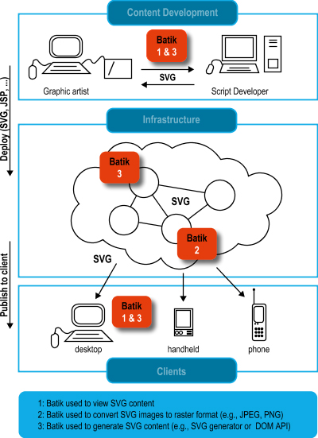

|
|

Batik is a Java(tm) technology based toolkit for applications
or applets that want to use images in the Scalable Vector Graphics
(SVG) format for various purposes, such as viewing,
generation or manipulation.
This is a warning that a security issue was reported in the
Batik Squiggle browser. Squiggle uses the Rhino scripting
engine and some features of that engine can be leveraged by
malicious scripts to gain access to otherwise protected
resources (like the file system).
The Batik team has worked with the Rhino team to fix the isssue
that was reported and the Batik 1.5.1 patch release addresses
the issue:
The project's ambition is to give developers a set of
core
modules which can be used together or individually to support
specific SVG solutions. Examples of
modules
are the
SVG Parser,
the SVG Generator and
the SVG DOM. Another ambition for
the Batik project is to make it highly
extensible
(for example, Batik allows the developer to handle custom SVG
tags). Even though the goal of the project is to provide a
set of core modules, one of the deliverables is a full fledged
SVG browser implementation
which validates the various modules and their inter-operability.
|
|

With Batik, you can manipulate SVG documents anywhere Java is
available. You can also use the various
Batik modules to
generate,
manipulate,
transcode and search SVG
images in your applications or applets.
Batik makes it easy for Java based applications or applets to
deal with SVG content. For example, using Batik's
SVG generator module,
a Java application or applets can very easily export its
graphics into the SVG format. Using Batik's SVG processor and
SVG Viewing component, an application or applet can very
easily integrate SVG viewing capabilities. Another
possibility is to use Batik's modules to convert SVG to
various formats, such as raster images (JPEG,PNG or Tiff).
Batik provides core modules
for handling and processing SVG files. See
examples of projects and
products using Batik for real-life example of how Batik is
already integrated in projects and products.
Batik provides building blocks that developers can assemble in
various ways in their Java technology applications or applets
to generate, parse, view or convert SVG contents. Batik can
also be used to generate SVG on a client or on a server, and
Batik can convert SVG
content convert SVG content into other formats such as
JPEG, PNG or Tiff or other formats (transcoder API).
Batik's goal is to make it easy for developers to handle SVG
content for various purposes, client-side or server-side, as
illustrated in the diagram.
|
|
Scalable Vector Graphics, SVG, is a W3C
recommendation. It defines an XML grammar for rich 2D graphics
which includes features such as transparency, arbitrary geometry, filter
effects (shadows, lighting effects, etc...), scripting and animation.
The SVG specification states:
This specification defines the features and syntax for Scalable Vector Graphics (SVG).
SVG is a language for describing two-dimensional graphics in XML [XML10]. SVG allows for three types
of graphic objects: vector graphic shapes (e.g., paths consisting of straight lines and curves),
images and text. Graphical objects can be grouped, styled, transformed and composited into previously
rendered objects. The feature set includes nested transformations, clipping paths, alpha masks,
filter effects and template objects.
SVG drawings can be interactive and dynamic. Animations can be defined and triggered either declaratively
(i.e., by embedding SVG animation elements in SVG content) or via scripting.
|
|
You can get the Batik distribution (source
and binary) on the
download page.
|
All other libraries needed by Batik are included in the distribution.
As a consequence the Batik archive is quite big, but
after you downloaded it, you will not need anything else.
|
|
 |  |  | | Examples of projects and products using Batik | |  | |  |
|
While it is hard to track projects and products which are using Batik, here are a few
ones which are known:
- Luxor XUL is a free, open-source XML User Interface Language (XUL) toolkit in Java released under the GNU
GPL that supports hand-picked Mozilla XUL goodies and
also includes a ultra-lightweight, multi-threaded web
server, a portal engine, a scripting engine, a
template engine and much more. Gerard Bauer, the Luxor project lead, has written an extensive
SVG presentation.
- BitFlash Brilliance delivers a robust
set of graphic-design and source-code editing tools for fast and flexible Mobile
SVG development. It uses Batik to display SVG Images.
- The Apache FOP project uses Batik to handle SVG images. It uses the SVG rasterizer and extends the Batik transcoder
architecture to offer SVG to PDF conversion.
- The Apache Cocoon project uses Batik to rasterize SVG images.
- The JFreeChart Project uses Batik to export charts in the SVG format.
- ILOG JViews Component Suite, a product for advanced visualization, uses and extends the Batik SVG export module.
- ILOG Discovery Preview, a free visual data analysis tool letting you visualize and edit data sets in a very wide variety of views (2D graphs and charts, various kinds of treemaps, parallel coordinates, parallel histograms and much more), uses the Batik SVG export module.
- Sketsa is a vector drawing application based on SVG. With Sketsa, you can create vector graphics that can be scaled and printed at any resolution, without losing detail or clarity.
- Oracle Corp.'s JDeveloper9i uses Batik to export class diagrams in SVG. It uses the
SVG export module (SVGGraphics2D).
- OptimalJ, a UML Class Diagram Editor for NetBeans, uses Batik to export SVG.
- Together Control Center 5.5 uses Batik to export UML diagrams in SVG.
- XWeb, a tool to create websites automatically out of XML input. Uses the Batik SVG Rasterizer.
- ElixirTech's ElixirReport uses
Batik for charting and for its SVG component.
- Lagoon, an XML-based framework for web site maintenance, uses the Batik SVG Rasterizer to render SVG as bitmap graphics for web publishing
- eDoc, a page layout software, is using the Batik SVG generator to export pages to SVG
- Svolgo,a Graph Visualisation/Transformation Framework for the
Semantic Web Cross-model transformation, node and arc diagrams, representation in SVG. This project uses Batik's SVG DOM implementation.
- Lords Map, a program to allow players and visitors to view the current map
of various campaigns. Lord Map uses Batik's SVG DOM and SVG Generator.
- XML_svg2image, is a PHP class which translates svg files to png or jpeg using Batik
|
|
|